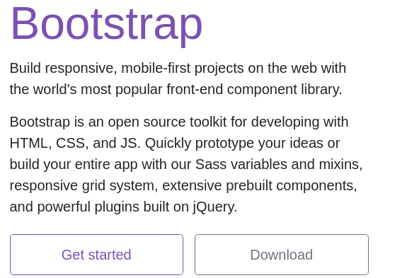
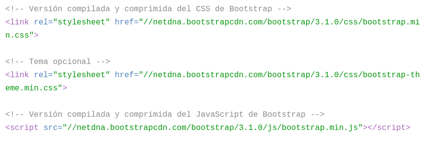
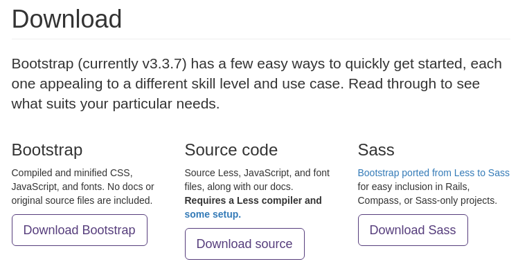

Introduccion
Beneficios: Entre los beneficios de Bootstrap, encontramos la creación de todo tipo de interfaces de usuario para páginas web, desde simples elementos como o iconos hasta componentes de interfaz gráfica avanzados como tips, tabs, desplegables, etc. Utilidades: Entre las utilidades que nos ofrece Bootstrap encontramos la posibilidad de crear layouts, plantillas o simplemente maquetar contenidos, colocando elementos allá donde deseemos. La gracia de todo es que está pensado para el desarrollo adaptable, conocido generalmente como Responsive Web Design, y del que ya hemos hablado en numerosas ocasiones.
Instalación
Para la instalación o use de boostrap hay dos formas:
1) Descargando
Se pueden bajar los archivos .js y los archivos .css a través del zip que proporciona la página de boostrap.

2) A través de CDN:
La empresa NetDNA aloja de forma gratuita en su CDN una copia de los archivos CSS y JavaScript de Bootstrap. Para utilizar estos archivos, modifica los siguientes dos enlaces en tus páginas (cambia el valor 3.0.0 por la versión específica de Bootstrap que quieras):

3) Instala Bootstrap con Bower
utiliza este gestor de dependencias para gestionar los archivos CSS y JavaScript originales de Bootstrap y mantener una copia local de su documentación. Para ello, ejecuta el siguiente comando:
bower install bootstrap

ICONOS EN BOOTSTRAP
Por motivos de rendimiento, todos los iconos requieren de una clase CSS común para todos y de una clase CSS específica para cada uno. Para añadir un icono en cualquier elemento de la página, utiliza el siguiente código como ejemplo. Y no olvides añadir un espacio entre el icono y el texto para que se vea mejor:
 Para agregar una imagen se necesita la etiqueta img y dentro de esta se especifica un el atributo src donde se debe de colocar la ruta de la imagen, para poder poner la imagen como responsive se necesita colocar en el atributo class img-fluid y en el atributo alt debe ir Responsive image, para colocarle un tamaño se utilizan los atributos de la etiqueta image width y height.
Para agregar una imagen se necesita la etiqueta img y dentro de esta se especifica un el atributo src donde se debe de colocar la ruta de la imagen, para poder poner la imagen como responsive se necesita colocar en el atributo class img-fluid y en el atributo alt debe ir Responsive image, para colocarle un tamaño se utilizan los atributos de la etiqueta image width y height.